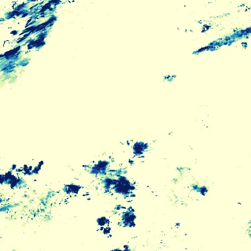

Benchmark / Near-lossless / imerg-pcp-12 / imerg-pcp-12-12
imerg-pcp-12-12
sahara-arabia · 2023-09-13 · sample details

Metadata
| id | imerg-pcp-12-12 |
|---|---|
| source | NASA/GPM_L3/IMERG_V07 (GPM IMERG Final Run V07, half-hourly) |
| asset | NASA/GPM_L3/IMERG_V07/20230913000000NASA/GPM_L3/IMERG_V07/20230913003000NASA/GPM_L3/IMERG_V07/20230913010000and 9 more |
| crs | EPSG:4326 |
| transform | -0.6 0.1 0.0 47.6 0.0 -0.1 |
| datetime_start | 2023-09-13T00:00:00Z |
| datetime_end | 2023-09-13T06:00:00Z |
| bands | precipitation to precipitation, 12 planes |
| shape | 12x512x512 |
| dtype | uint16 |
| unit | mm/hr |
| scale | 0.009999999776482582 |
| offset | 0 |
| input_sha256 | 45a9b8cf728f79438d8ca0a4cefff85654b7bdd7c79e6e8d9927d222887b27a5 |
| site | sahara-arabia |
| regime | dry |
| lon | 25.0 |
| lat | 22.0 |
| grid_column | 1794 |
| grid_row | 424 |